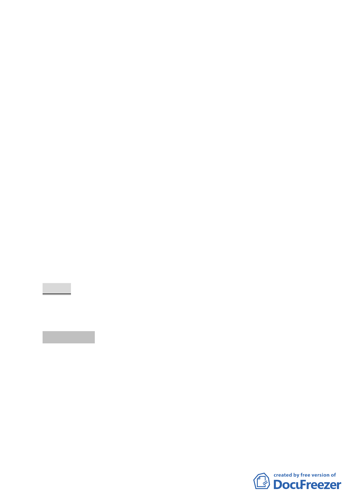

新單元
案情概要說明：
一、本更新單元位於臺北市中山區錦州街以南、錦州街 30 巷以
西、錦州街 4 巷以東及錦州街 4 巷 10 弄以北所圍街廓內之東
側，計畫面積 1,585 平方公尺。
二、本案更新單元土地使用分區為商四特（原屬商三），更新單
元內土地使用現況主要作為住宅使用，一樓為一般零售業和
小吃店使用。更新單元內計有 6 棟建物，構造分別為鋼筋混
凝土、木造及磚造，屋齡老舊，多數逾 30 年。
三、本件係市府以 100 年 5 月 10 日府都新字第 09932388000 號函
送到會。
四、申請單位：賴玉霞。
五、辦理單位：臺北市政府。
六、法令依據：都市計畫法第 66 條、都市更新條例第 5 條、第 6
條、第 8 條、第 11 條及臺北市都市更新自治條例第 15 條。
七、本更新單元劃定業經市府審查符合「臺北市都市更新自治條
例」劃定基準及環境評估標準。
決議：本案更新單元劃定範圍照案通過。
附帶決議：本案未來開發仍應納入更新處研擬中之公有土地處理
原則與規範進行檢討。
討論事項 八
案名：劃定臺北市大安區懷生段一小段 260-1 地號等 10 筆土地為
更新單元
案情概要說明：
一、本案位於大安區忠孝東路三段 251 巷 13 弄、安東街西南側完
整街廓，面積 1188 平方公尺。
二、本更新單元土地使用分區為第三種住宅區，土地及建物均為
私有。
- 11 -